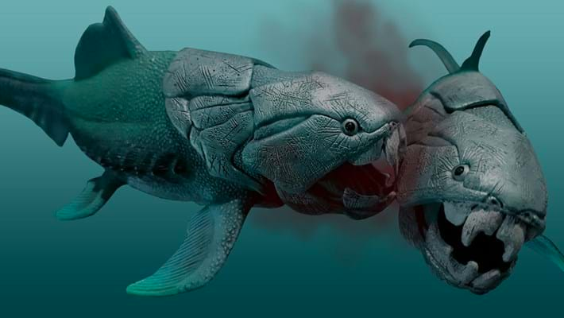
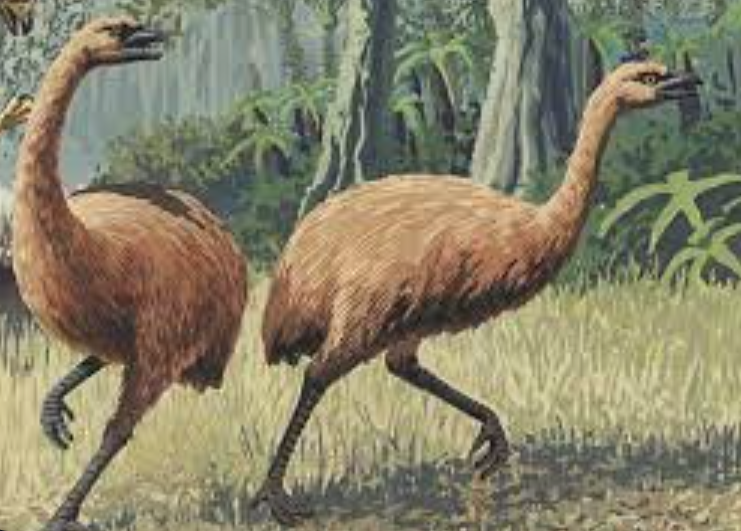

Featured Species
Helicoprion

The Helicoprion is an Extinct Species related to the modern day Sharks. They lived 270 Million years ago During the early Permian period in the Paleozoic era. The cause of their extinction is due to the "Permian Extinction" which occured 252 Million years ago due to overfullings of lava warming the planet killing Millions of species leading to extinction, and that was the2nd mass Extinction event in the Earth's history.
LearnMoreDunkleosteus
The Dunkleosteus is an Extinct genus of humagus fish that lived in the late Devonian Period around 358 Million years ago in Paleozoic era
LearnMoreMegalania
The Megalania is an Extinct genus of Poisonius lizards that roamed australia 50,000 years ago.
LearnMoreTerror Bird

The Terror Bird is an Extinct genus of Large flightless Birds that mainly roamed South America but it also lived in Africa 53 to 0.1Million years ago.
LearnMoreDoedicurus
The Doedicurus is an Extinct genus of Large armadila's that roamed South America 12,000 years ago.
LearnMoreTitanaboa
The Titanaboa lived in Collombia and went Extinct 58 Million years ago due to the dropping temperature leading to Extinction.Oh climate change how tragic can it be.
LearnMoreichthyosaur
The ichthyosaur lived in the Mesozoic era 250 Million years ago in the jurassic Period and went Extinct around 90 Million years ago.
LearnMore


Moa
 LearnMoreSmilodon

The Saber-Tooth Tiger, or Smilodon, went extinct around 10,000 years ago at the end of the last Ice Age. While the exact cause of their extinction is not known, it is thought to be related to climate change and the decline of their prey.
LearnMore